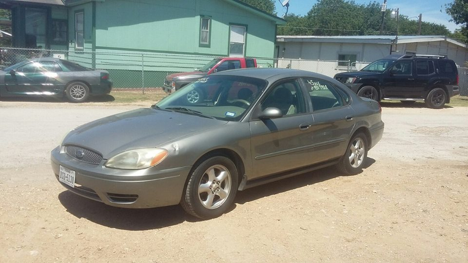

My name is Luis
I spend a lot of time behind a computer. Most of the jobs that I've had pertain to computer work in the form of technical support, or troubleshooting program errors.
I've also work with Servers and Networks issues.
Life is 10% what happens to you and 90% how you react to it. ...
Daytona Beach Florida is a popular spot to spend time during the Summer Months
My favorite actor is Robert John Downey Jr
because he's one of the few actors in history to remake himself.
The best car I've ever had was a 2004 Ford Taurus. It ran for abotu 2 years without a problem, and I spent more than enough money to keep it maintained.

| Decimal | Hexadecimal |
|---|---|
| 0 | 0 |
| 1 | 1 |
| 2 | 2 |
| 3 | 3 |
| 4 | 4 |
| 5 | 5 |
| 6 | 6 |
| 7 | 7 |
| 8 | 8 |
| 9 | 9 |
| 10 | A |
| 11 | B |
| 12 | C |
| 13 | D |
| 14 | E |
| 15 | F |